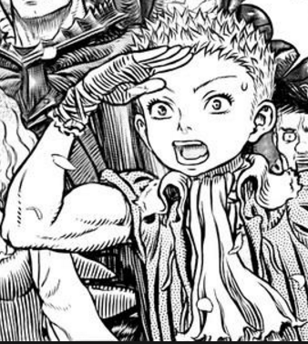

Isidro
O Isidrovi:
Mladý chuligán, na kterého skupina narazila, na cestě za záchranou Cascy. Je sebestředný, arogantní, ale také vynalézavý a několikrát skupině pomohl na jejich cestách.


Od Kentara Miury™.
Mladý chuligán, na kterého skupina narazila, na cestě za záchranou Cascy. Je sebestředný, arogantní, ale také vynalézavý a několikrát skupině pomohl na jejich cestách.